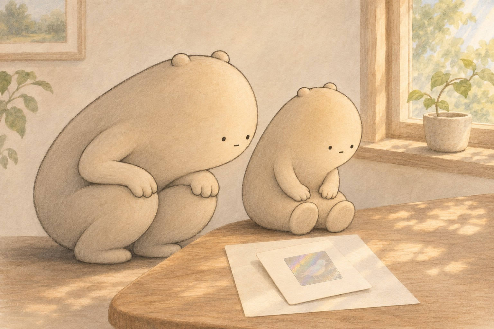
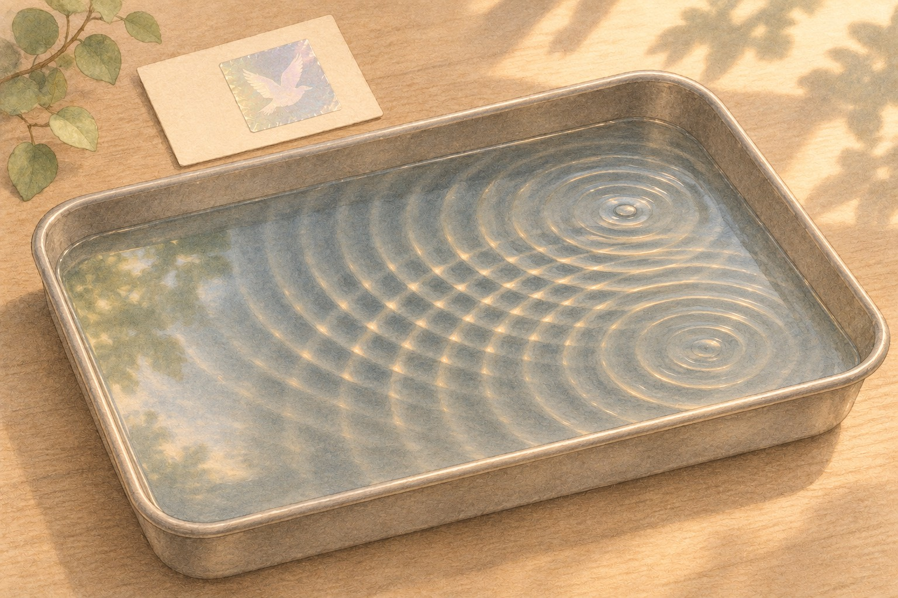
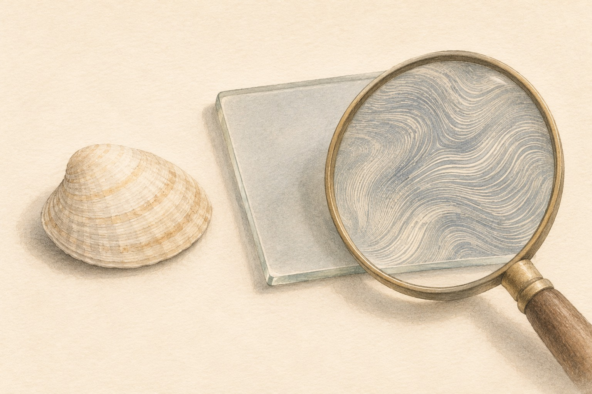
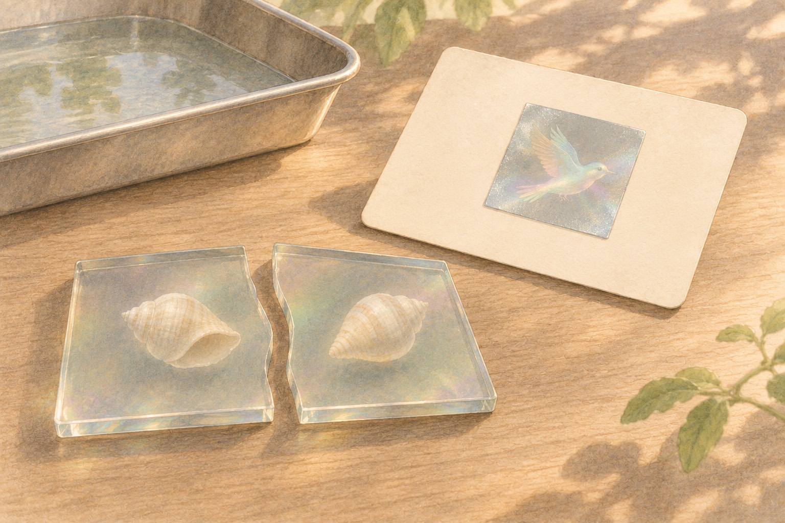
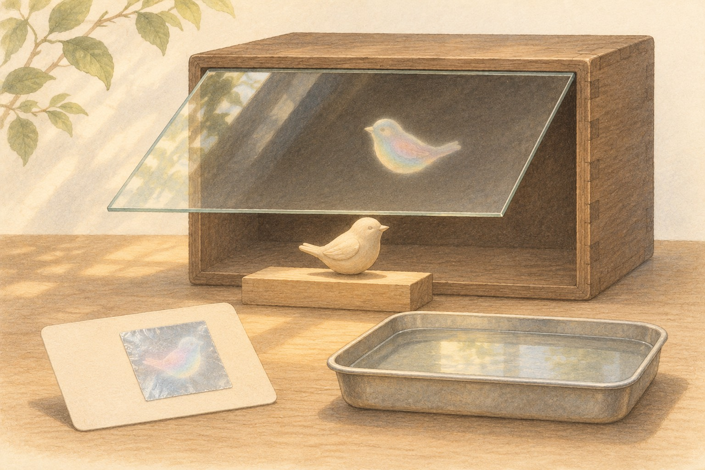
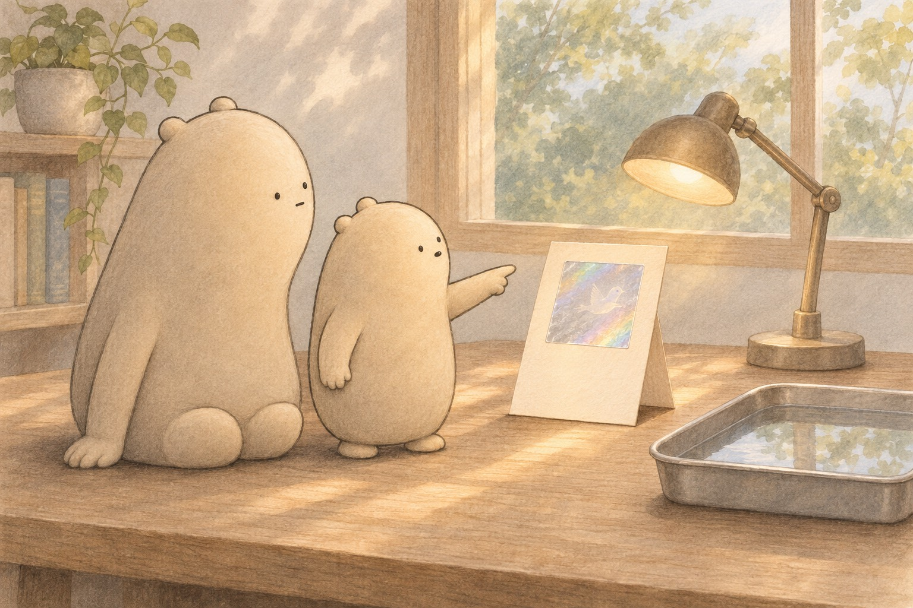

How can a flat, shiny square hold a little bird you can look around?

Where shall we look?

Where ripples cross, bumps stack up or calm out.
What do ripples have to do with light?
Find the tall bumps and the flat calm lines where the two rings cross.
A little explanation & something to try
Light travels in waves, a bit like ripples. Where two crests meet, they stack into a taller bump. Where a crest meets a dip, they cancel into calm. A hologram records that crossing pattern, made with light instead of water.
Try this. Put a little water in a baking pan. Tap two fingertips in it at the same time. Look for the calm lines between the bumps.

The film holds fine stripes, not a shell.
What is really on a hologram's film?
Compare the shell with the fine stripes in the lens. Do they look alike?
A little explanation & something to try
Not a picture of the shell. A laser beam is split in two. One part bounces off the shell, and one part shines straight on the film. Where they cross, the film records light and dark stripes far thinner than a hair.
Try this. Look at your fingertip with a magnifying glass. Hologram stripes swirl a bit like that, but they are far tinier and closer together.

Each half still shows the whole shell.
What happens if a hologram breaks?
Look inside each half. Is any part of the shell missing?
A little explanation & something to try
Each half still shows the whole shell, just a little blurrier. Light from every spot on the shell landed on every part of the film. It is like peeking through one pane of a window: you still see the whole yard.
Try this. Look out a window through a paper tube. Move the tube to a different pane. Can you still see the whole tree from each spot?

Slanted glass makes a reflection seem to float.
Are floating pictures in movies holograms?
Find the real toy bird below and its reflection in the slanted glass.
A little explanation & something to try
Usually not. Many stage holograms are an old trick from 1862 called Pepper's ghost. A slanted sheet of clear glass reflects a lit figure, so it seems to float. A real hologram needs film or foil to bend the light.
Try this. At night, look out a dark window from a bright room. Can you see your room floating outside? That is the same glass trick.
Hologram counts
Add and subtract counts of ripples, stripes, tilts and pieces.
Where ripples cross, bumps stack up or calm out.
Choose one problem and draw the tens as sticks and the ones as dots to check.
1.A sheet has 62 shiny squares, and 37 of them hold a bird. How many squares have no bird?
62 − 37 =
A small hint
Trade 1 ten for 10 ones if needed, then subtract the ones and tens.
2.Little Wonderer counts 27 ripple bumps on one side of the pan and 36 on the other. How many bumps in all?
27 + 36 =
A small hint
Add the ones, then the tens. Trade 10 ones for 1 ten if needed.
3.A strip of film shows 54 stripes, and 28 are dark. How many stripes are bright?
54 − 28 =
A small hint
Trade 1 ten for 10 ones if needed, then subtract the ones and tens.
4.A hologram plate is 90 millimetres wide. One broken piece is 47 millimetres wide. How wide is the other piece?
90 − 47 =
A small hint
Trade 1 ten for 10 ones if needed, then subtract the ones and tens.
5.Big Wonderer tilts the card 19 times, and the little one tilts it 26 times. How many tilts in all?
19 + 26 =
A small hint
Add the ones, then the tens. Trade 10 ones for 1 ten if needed.
6.The scientist waits 45 seconds for the table to go still, then records for 38 seconds. How many seconds in all?
45 + 38 =
A small hint
Add the ones, then the tens. Trade 10 ones for 1 ten if needed.
A whole message in light
How Holograms Work
A bird inside a card
Little Wonderer tilts a plain card with a shiny square on it. Inside the square, a tiny bird seems to sit behind the card. Tilt it left, and you see one side of the bird. Tilt it right, and you see the other side. Big Wonderer crouches low to look. How can a flat square hold something you can look around?
What changes when the card tilts?
Two ripples cross
Light travels in waves, a little like water. Tap two fingers in a pan of water at once. Two sets of rings spread out and cross. Where two bumps meet, they stack into a taller bump. Where a bump meets a dip, they cancel into a calm line. This crossing is called interference. A hologram records it with light.
What happens where a bump meets a dip?
Stripes, not a picture
To make a hologram, a scientist splits one laser beam into two. One beam bounces off a seashell and onto the film. The other beam shines straight onto the film. The two beams cross, just like the two ripples. The film records bright and dark stripes, finer than a hair. It looks nothing like a shell!
Why does the film not look like a shell?
Two halves, both whole
Here is a strange clue. Break a hologram plate in half, and each half still shows the whole shell! Light from every spot on the shell reached every part of the film. So every part holds the whole scene, seen from its own spot. The name hologram comes from Greek words for whole and writing.
Why does each half still show the whole shell?

A rainbow bird
Back at the table, the card stands under a lamp. Big Wonderer watches rainbow colors slide across it. The little one points at the bird. Now the guess changes. The bird is not painted on. The shiny foil is stamped with tiny grooves. They bend the lamplight back into the bird's light waves. Each eye gets a slightly different view, so the bird looks deep.
How do the grooves make the bird look deep?
A bird that floats?
In movies, glowing pictures float in the air. Most stage versions are an old trick from 1862. A slanted sheet of clear glass reflects a lit figure, so it seems to hang in the air. A real hologram needs film or foil to bend the light. It also needs a very still table, because one wiggle can blur the stripes. Could light ever draw a bird in empty air?
What do floating stage pictures use instead of a hologram?